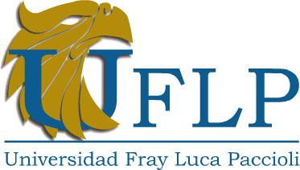

Encuentros formativos
Aprendes de manera sistemática las bases del Coaching Ontológico en espacios donde la experiencia de cada participante también es fuente de aprendizaje.
Por eso llegaste hasta aquí
La Formación Profesional en Coaching Ontológico de ECOA es un proceso para aprender a observarte, conversar distinto y abrir nuevas posibilidades en tu vida, tus vínculos, tu trabajo y, si lo eliges, en tu forma de acompañar a otros.
Si llegaste hasta aquí, probablemente algo ya se movió.
Quiero saber si ECOA es para míTe orientamos por WhatsApp según tu momento: vida personal, relaciones, liderazgo o formación como coach.
"Si algo en ti dijo: es por aquí, sigue leyendo."
Traes la espinita
Todavía no sabes gestionar lo que sientes antes de que te controle a ti.
Todavía terminas tus conversaciones juzgando en lugar de conectando.
Todavía ocupas un rol de liderazgo sin saber cómo inspirar de verdad.
Todavía gastas energía en controlar situaciones que no dependen de ti.
Todavía no tienes claro hasta dónde llega tu poder y dónde empieza el del otro.
Todavía diriges desde la autoridad y no desde la inspiración.
Todavía cargas errores del pasado que no has podido soltar.
Todavía no encuentras un propósito que le dé dirección a todo lo que haces.
sigue bajando. No estás leyendo una página cualquiera; estás mirando una posibilidad de avanzar en tu proceso.
Para quien sabe que todavía hay algo por resolver
No todas las personas llegan a ECOA buscando lo mismo.
Algunas llegan porque no encuentran un propósito que le dé sentido a lo que viven cada día.
Otras llegan porque tienen las herramientas técnicas pero descubren que eso no es suficiente para mover e inspirar a su equipo.
Lo que sí tienen en común es que el "todavía" ya no les alcanza como respuesta.
La idea central
Es desde dónde lo estás observando.
Cuando solo cambias la acción, repites el mismo patrón con otro nombre.
Cuando aprendes a observar lo que sientes, lo que dices y cómo lo dices, empiezas a ver opciones que antes simplemente no existían para ti.
Eso es lo que trabaja el Coaching Ontológico. No te dice qué hacer. Te entrena para observarte distinto y desde ahí moverte distinto.
Y antes de que lo confundas
Es una formación profesional con metodología, modelos y práctica real.
coleccionar frases bonitas
aprender trucos para convencer a otros
decirle a la gente cómo vivir
tapar lo que sientes con positivismo
observar con distinciones que te permitan entenderte a ti y a otros de manera diferente
conversar con responsabilidad abriendo posibilidades para ti y para quienes te rodean
acompañar al otro reconociendo y validando siempre su ser
actuar con coherencia entre lo que piensas, dices y haces
Además, te incluye
Aprendes de manera sistemática las bases del Coaching Ontológico en espacios donde la experiencia de cada participante también es fuente de aprendizaje.
Entrenamiento real para escuchar desde el cuerpo, diseñar tus propias preguntas y acompañar a otros con estructura y presencia.
Espacios para practicar coaching uno a uno y en mini equipos donde profundizas temas y afinas tu forma de acompañar.
Un equipo de coaches con más de 10 años de experiencia y un staff que te acompaña de manera individual durante todo el proceso.
Formas parte de un grupo que sostiene tu proceso, aprende contigo y te acompaña para que no lo transites en soledad.
Certificación como coach COPA profesional con 425 horas y acreditaciones nacionales e internacionales.
Si esto ya te hizo sentido, falta mirar lo concreto.
Quiero fechas, inversión y descuentoTe enviamos la información clara para que puedas decidir sin adivinar.
Respaldos, convenios y alianzas

Voces reales
No todas las respuestas se entienden leyendo. Algunas se sienten cuando escuchas a quienes ya pasaron por el proceso.
¿Y cómo funciona?
Cuéntanos qué te movió: tu proceso personal, tu liderazgo o formarte como coach. No necesitas tenerlo todo claro para escribir.
Modalidad, duración, certificación, horarios, inversión y formas de pago. Sin vueltas.
Si tienes dudas, las resolvemos juntos. Si ya sabes, te explicamos cómo inscribirte.
El proceso empieza cuando tú decides. Y ese momento puede ser hoy.
Para quien tenga dudas y sí lee
Si todavía sigues aquí, ya tienes la respuesta
El 60% de descuento tiene fecha de cierre. Escríbenos hoy y te confirmamos si aplica para la próxima cohorte.
Quiero hablar hoy con ECOA"No tienes que llegar con todo claro. Solo necesitas dar el primer paso."